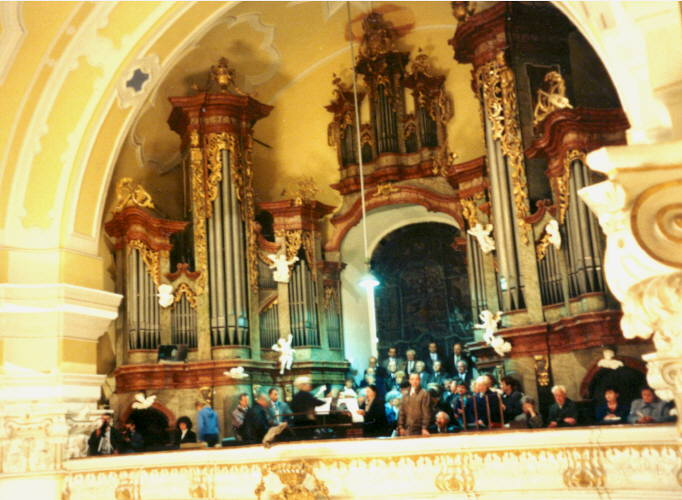
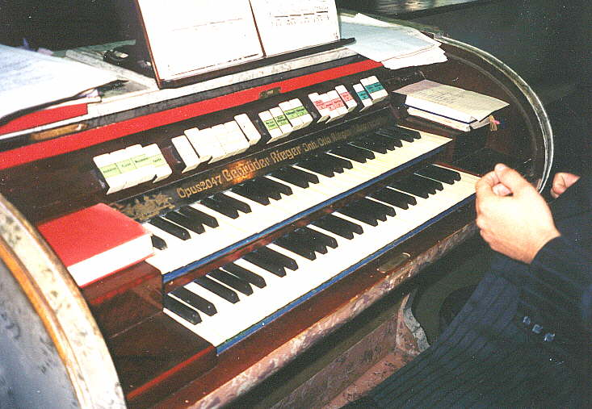

Fotogalerie moravských a slezských varhan I.
V této
fotogalerii jsou a budou prezentovány především fotografie varhan z ostravska
a okolí, doplněné alespoň minimem informací o konkrétním nástroji. Nic
nebrání tomu, aby byla tato galerie rozšířena i o varhany z okolí vzdálenějšího,
sám vlastním mnoho obrázků varhan z celého Československa, pokud máte
zájem zařadit zde i ten "svůj" nástroj, kontaktujte mne... |

 |
|
Poutní chrám P. Marie ve Frýdku (mariánský kostel, frýdecká Bazilika Minor). Rieger 1894, Opus 433, dva manuály, 29 rejstříků, mechanická kuželka. Zvláštností varhan je délka traktury - součet délky abstraktů pod podlahou kůru a hřídelí pod hracím stolem a v dělených skříních představuje až 18m! Od stisku klávesy po otevření sady ventilů tedy varhaníka dělí právě tato vzdálenost. Hra na tento nástroj je také dosti náročná fyzicky, v závislosti na počtu zapnutých rejstříků a spojek může síla na klávese přesahovat i desítku Newtonů (něco přes kilogram...). Nástroj je rozdělen do dvou samostatných skříní (C a Cis strana), malý pozitiv nad vitrážovým oknem ve středu je jen nefunkční dekorace. |

 |
 |
Varhany
ve Skalici u Frýdku-Místku. Gebrüder Rieger Opus 2047, dva manuály, 21
rejstříků, pneumatická traktura. |

Poutní chrám na Hostýně - Rieger 1953/1955, 72 rejstříků, čtyři manuály, pneumatická traktura. Vzhledem ke specifikám pneumatiky a nesymetrickému řešení varhanní skříně i umístěním hracího stolu na straně kůru měly tyto varhany nestejná zpoždění v chodu traktury a další problémy, především zchátralost po půlstoletí používání, více jak polovina rejstříků byla pro různé závady odstavena. V letech 2001 - 2003 proběhla generální oprava, traktura byla nahrazena elektrickou, nástroj byl vybaven dvojicí hracích stolů (jeden dole, v prostoru kostela). O jejím průběhu i o varhanách si můžete počíst zde: www.hostyn.cz/varhany.htm |

 |
|
Morávka
u Frýdku-Místku. K. Neusser, 1908, dva manuály, pneumatika.
|

Sviadnov
u Frýdku-Místku. Malé varhany v maličkém kostelíku s až překvapivě barevným
a mohutným zvukem. Jan Tuček, cca 1900, 5 rejstříků, mechanická kuželka.
|

|
Rychaltice.
Nové varhany (cca polovina devadesátých let minulého století).
|
|

 |
Malý
pozitiv v dřevěném kostelíku sv. Antonína Paduánského na Prašivé. Rieger
1877, 5 rejstříků. |

Zde mohou být i Vaše obrázky (a třeba i formou podrobné prezentace - historie varhan, dispozice...). Kontaktujte mne, prosím. |